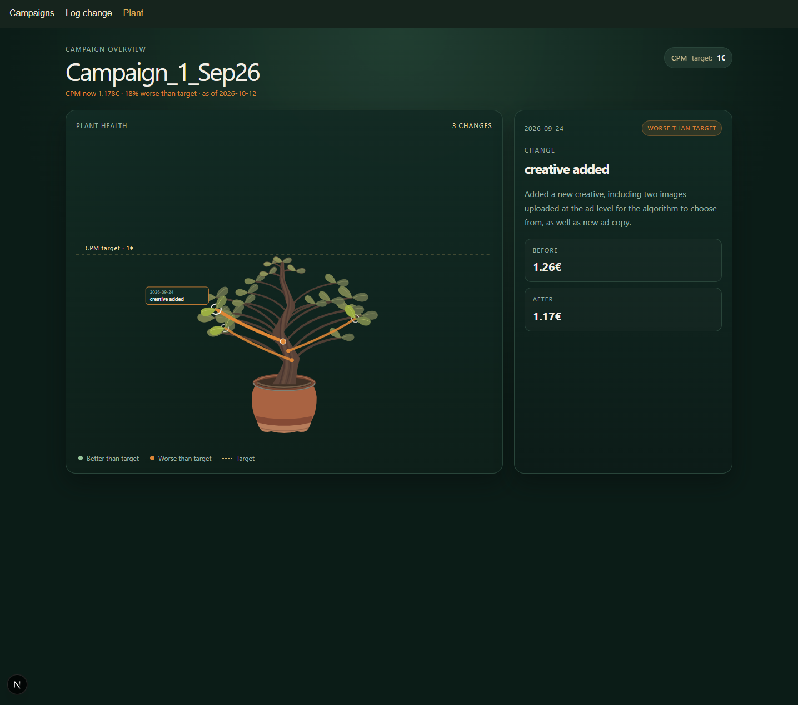

The problem
Where did that change go?
In paid social, we optimize campaigns all the time, but the optimizations and their results are often tracked in separate places. To see what a change brought, I had to match it to the right reporting week in the monitoring file, or search the Ads Manager history log across the different campaign levels. So I turned the history into a plant: every optimization is a branch, green when the KPI is better than the target and orange when it is still worse.
The numbers come in every day through the Meta API, and I log each optimization next to them. That way I can see what each change brought without searching several sources. I felt the need for this because, once a campaign has been running for a few weeks, it is easy to lose track of which change helped and why it was made.

What it does
One place for change and effect
The Meta Marketing API feeds the numbers in automatically, every day. I log each optimization in a short form, with the KPI before and after. The plant shows the live KPI next to the target, and I get an email when a campaign drops below it.
How it works
- GitHub Actions runs every morning.
sync-campaigns.jspulls the numbers from the Meta Marketing API into a Supabase database.check-kpi.jscompares the latest value with the KPI target and sends an email if it is worse.- The Next.js app reads the data and draws the plant.
The QA side
I built it with testing in mind. Playwright tests cover the navigation, the campaign list, the plant page with its live KPI status, and the form validation. Next on my list: tests for submitting the form and for the alert logic.
What I learned
Connecting a real API, keeping secrets out of the code, scheduling a job, and making data readable at a glance. One small detail taught me a lot: for CPM, lower is better, so colors and wording had to follow that rule everywhere.
Built with a personal test ad account. No client data.